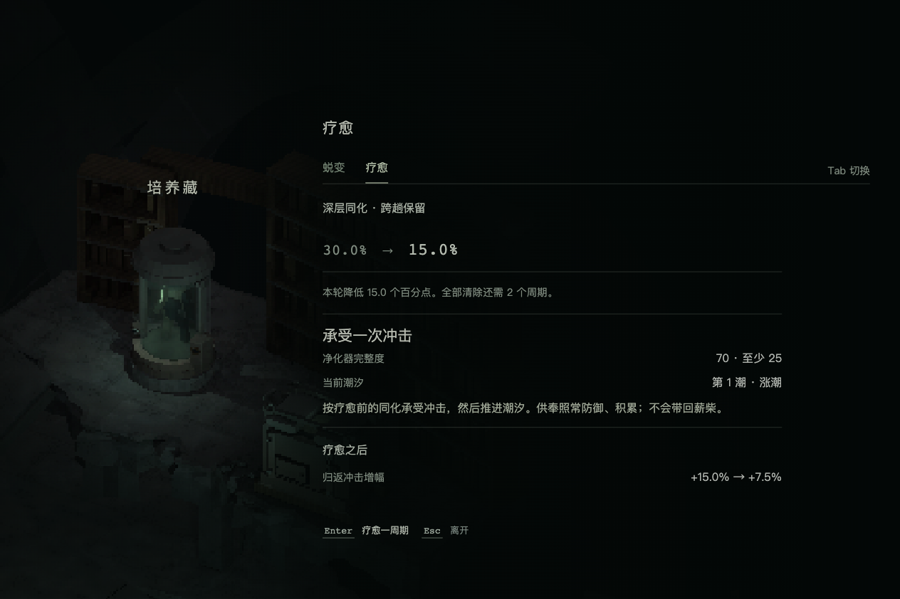
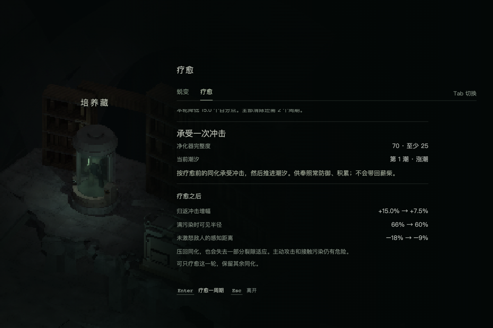
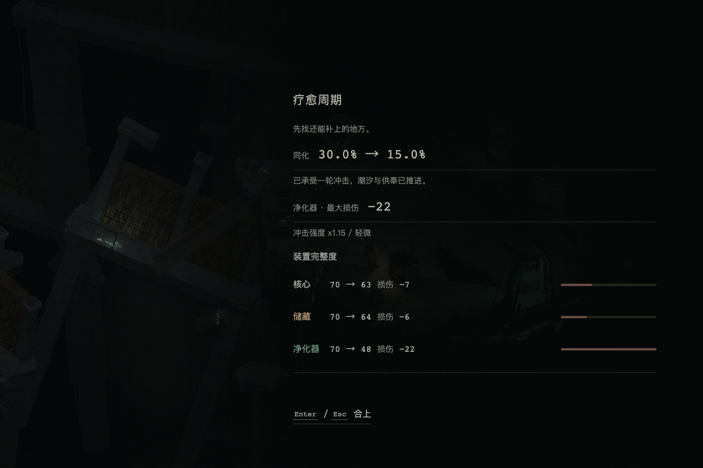
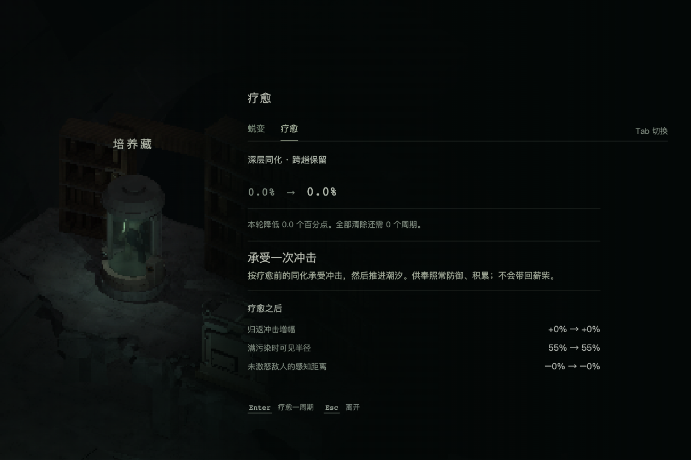
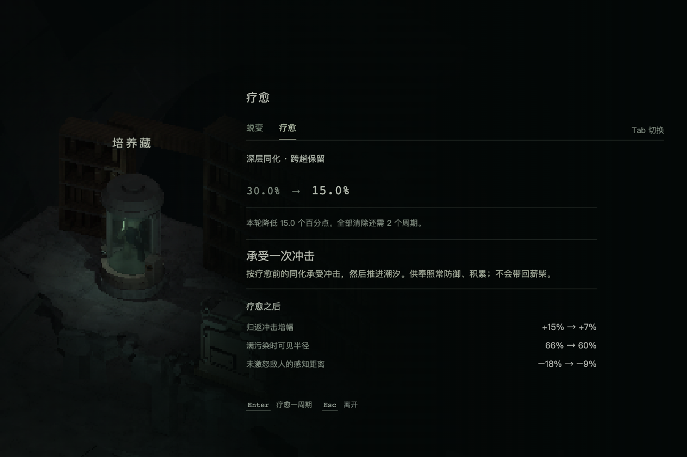
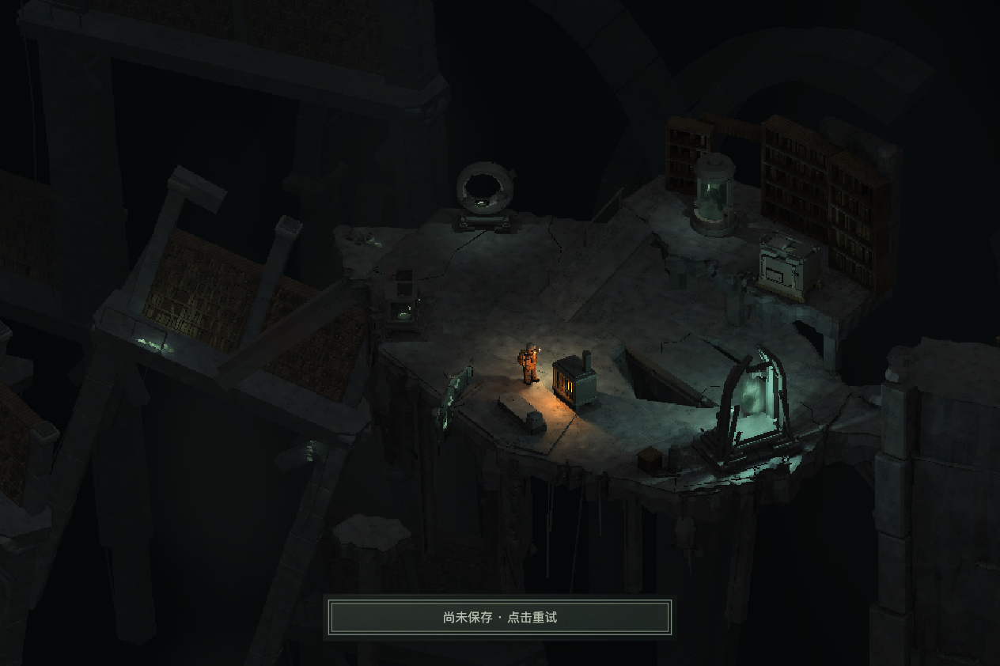
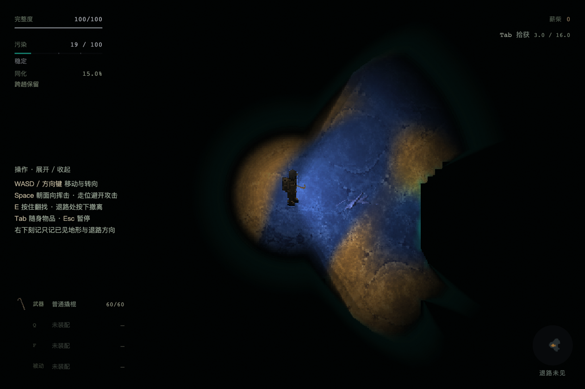
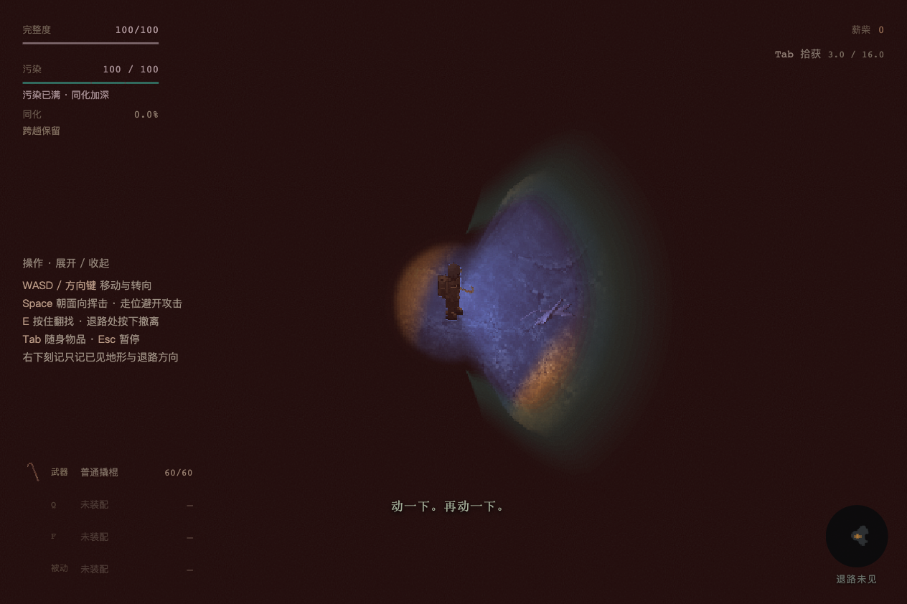
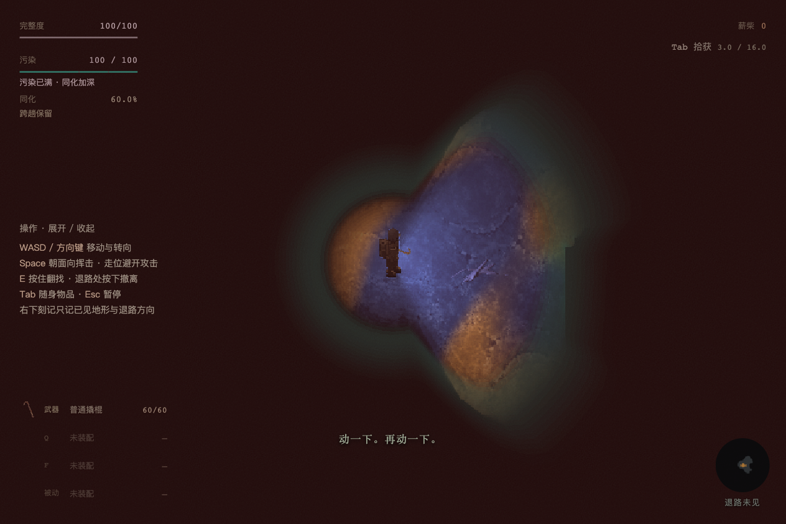
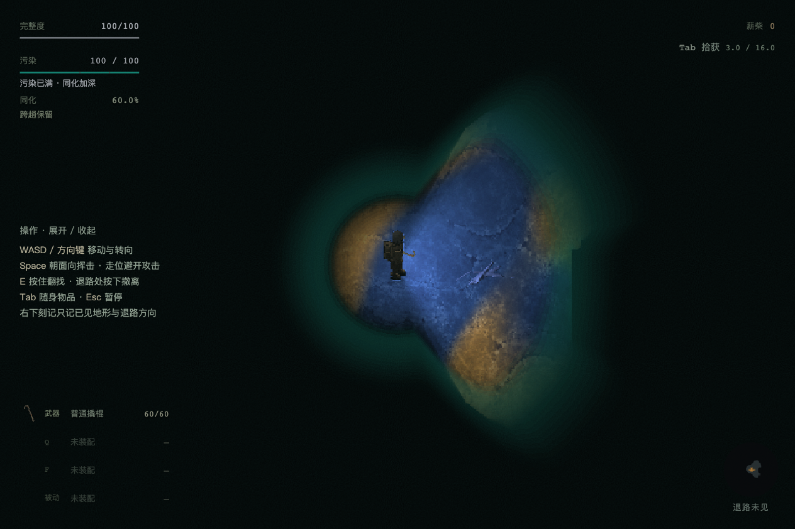

同化与疗愈 · 限定浏览器验收
2026-10-19 · 隔离 Chrome 155.0.8059.80 · 正式标题、净化点、备行和 RiftScene。完整流程 8 项运行检查通过；两次独立抽取均为晶化林床低污染，只有一个世界。浏览器 page / console error 均为 0。
完整运行记录与源文件指纹 · 最终预览补拍、事实与布局断言
最终疗愈预览
可疗愈时显示净化器 70 / 至少 25、第 1 潮 · 涨潮，冲击增幅准确显示 +15.0% → +7.5%。成本在初始视口内，执行按钮固定可达；滚轮可到达全部后果说明。两张图来自同一次面板。

初始位置：资格、当前潮相和执行动作同时可读。

真实滚轮滚动到末尾，后果说明可读，底部执行与离开保持固定。
一次疗愈与资格、拒写
30 → 15、实际模块损伤与潮汐推进同笔保存；真实出击计数仍为 0。重复 Enter 不关闭报告或追加疗愈。A0 与 HP24 禁用；拒写时仅显示重试，Esc 不叠系统菜单，恢复写入只提交原候选一次。基地冷续没有重放。

真实报告：同化30 → 15、净化器70 → 48、储藏70 → 64、核心70 → 63。

A0：无需疗愈。
净化器 HP24：说明至少需要25。
模拟拒写后按 Esc，屏上只有保存重试；冻结候选不重复冲击。
正式新出发与受控适应
真实选低污染 → 整理行装 → 踏入裂隙；启用 persistent-v1。污染封顶100后，1599.97ms有效模拟的同化增量为0.01599970000004447，公式预期0.0159997。新入场7.939秒、冷续7.119秒为本次观测，不作为性能验收。

正式入场的低污染状态。

受控 P100 / A≈0：可见半径倍率≈0.55。
受控 P100 / A≈60：可见半径倍率≈0.76；红色侵蚀保留。
冷续保留同一run、模拟时钟、A与同化协议，不重放疗愈。
保留的早期记录
早期 healing-before.png 属于协调端旧模块注入导致的错误前置，不作通过证据。第一轮完整记录功能通过，但图像在220–260ms淡入中捕获，故本图册采用第二轮稳定截图。第二轮发现的预览成本信息与7.5%精度缺口，已由最终限定补拍关闭；旧截图不追改。
每份 JSON 保留模块实际加载URL、执行步骤、状态/存档快照、错误记录和源文件 SHA-256。源状态与运行范围以各报告为准。